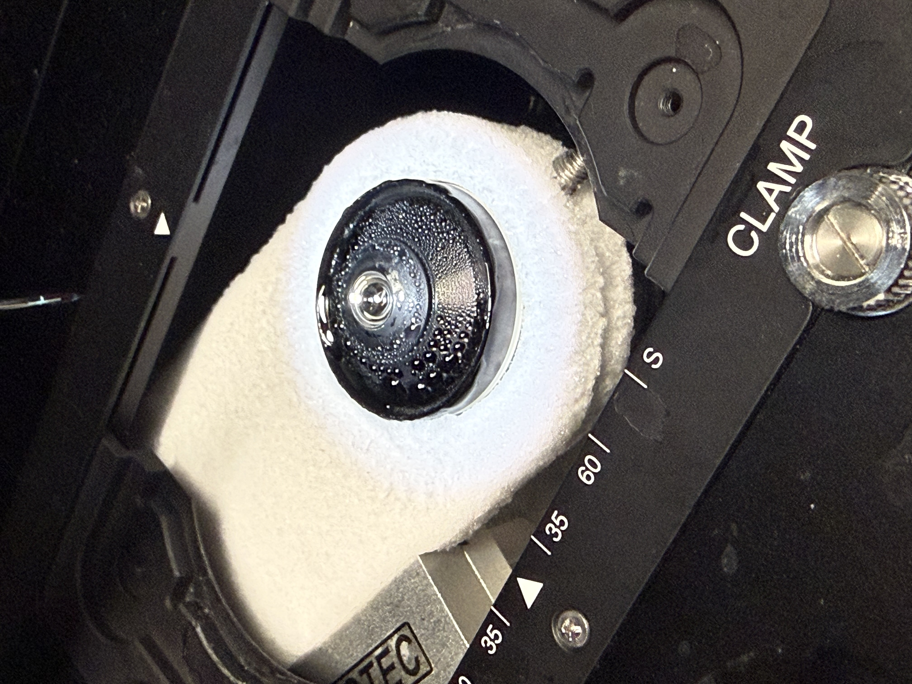
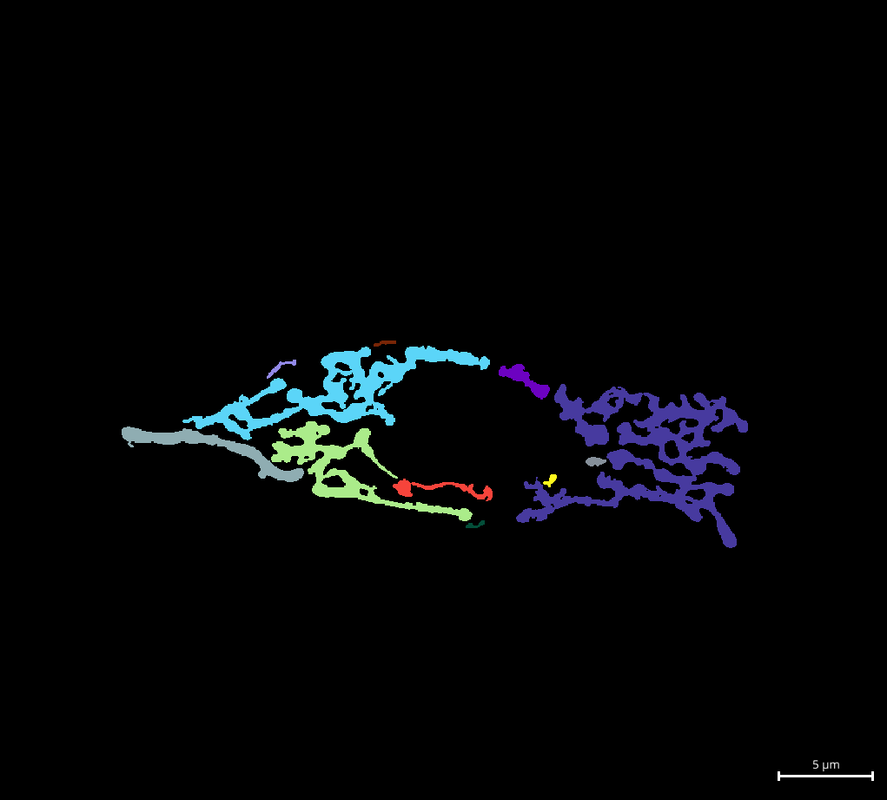

Current · 2025–present · University of Cambridge × British Antarctic Survey · UKRI CRCRM
This interdisciplinary project brings together the Kaminski Group (Dept. of Chemical Engineering & Biotechnology, Cambridge) and the British Antarctic Survey to develop a high-resolution microscopy platform capable of visualising protein dynamics in Antarctic fish cells at sub-zero temperatures. I apply advanced fluorescence microscopy techniques, including super-resolution methods and environment-sensitive dyes, to probe nanoscale cellular behaviour in extreme cold. Solvatochromic probes are particularly powerful: their emission spectra shift with local membrane polarity, allowing us to sense changes in membrane organisation in real time, without perturbing the cell.

Computational pipeline · Open source
A computational pipeline built on top of Nellie's output to extract and interpret quantitative morphological parameters of mitochondrial networks, including network connectivity, branch length distributions, and motility metrics. Designed for high-throughput batch analysis of live-cell imaging data.
GitHub →Ongoing and recent collaborations within the Department of Chemical Engineering & Biotechnology, University of Cambridge.
Kumita Group
Applying single-particle tracking (SPT) to measure the properties of biomolecular condensates, probing how the internal organisation and dynamics of these membraneless compartments relate to their function.
Di Michele Group
Using oblique plane microscopy to image giant unilamellar vesicles (GUVs) in 3D, enabling volumetric characterisation of structure and organisation in these model lipid bilayer systems.
Current and recent students supervised or co-supervised within the University of Cambridge.
Frederick Lawrence
2024–present
Transformer-based single-particle tracking analysis
MPhil DIS · Dept. of Physics, University of Cambridge
Shonit Sharma
2024–2025
Characterisation of membrane bilayer models at cold using solvatochromic dyes
Part IIB · Dept. of Chemical Engineering & Biotechnology, Cambridge
Boyd Lyons
2024–2025
Characterisation of membrane bilayer models at cold using solvatochromic dyes
Part IIB · Dept. of Chemical Engineering & Biotechnology, Cambridge